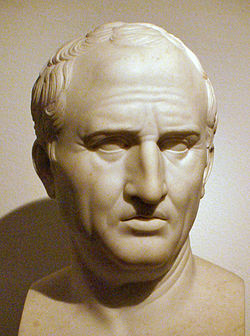

Bust of Marcus Tullius Cicero
"There is no quality I woild rather have, and be thought to have than gratitude. For it is not only the greatest virtue, but the mother of all the rest" - Cicero
Here is a timeline of events in Cicero's life:
- 106 BC - Birth
- 90-88 BC - Military Service
- 83-81 BC - Started his career as a lawyer
- 81 BC - Cicero's First Speech
- 80 BC - First public case
- 75 BC - Served as Quaestor in Sicily
- 69 BC - Served as Aedile
- 66 BC - Served as Praetor
- 63 BC - Served as Consul
- 58 BC - Went into exile
- 43 BC - Death